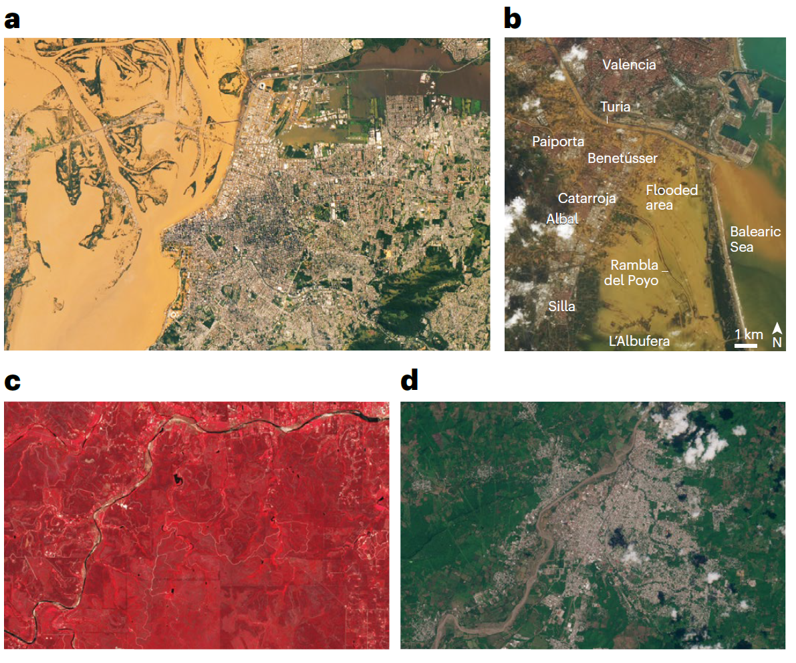

Rapid drought-to-flood weather whiplash amplifies climate change governance failure

Resumo em Português
Os eventos climáticos extremos ocorridos em 2024-2025 na Europa e nas Américas expuseram como a interação de fatores atmosféricos pode desencadear inundações sem precedentes, com graves consequências socioeconômicas e ambientais. Esses eventos evidenciam lacunas na governança e reforçam a necessidade de estratégias hidrossociais integradas que combinem previsões meteorológicas aprimoradas, planejamento do uso da terra baseado em evidências científicas e gestão ambiental sustentável.